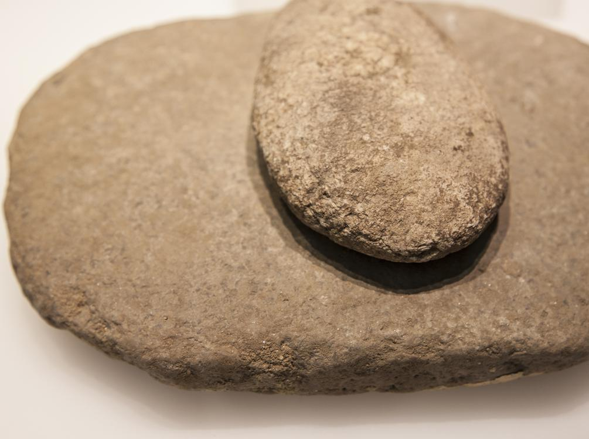

Дослідження життя давніх людей
Люди, як суспільство, існують вже дуже давно. Але перші написи почали робити лише приблизно 3200 р.до нашої ери.
Період до того, як люди винайшли писемність, називається доісторичним.
Оскільки немає письмових джерел з доісторичного періоду, вчені сьогодні повинні дізнатися про це, вивчаючи предмети, які люди залишили по собі.
Який з наступних пунктів може допомогти вченим дізнатися про людей, які жили в доісторичний період? Виділіть усі, які застосовуються.
